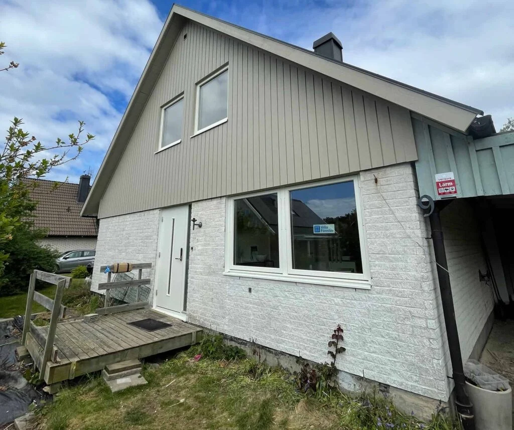

Släpp in ljuset. Stäng ute draget.
Nya fönster kan göra stor skillnad för både husets uttryck och känslan inomhus. Vi hjälper dig med bytet.

Fönsterbyte
med omtanke.
Ett bra fönsterbyte börjar med rätt mått och rätt lösning för huset. Vi går igenom befintliga fönster, fasad och önskemål inför valet av nya rutor. Monteringen och anslutningarna mot huset är lika viktiga som fönstret i sig.
Prata med oss om fönsterSe hantverket
i våra projekt.

Bra att veta.
Hur planerar vi ett fönsterbyte?
Börja med att berätta hur många fönster det gäller, vilken typ av hus du har och vad du vill förbättra. Bilder underlättar en första bedömning.
Var kan ni hjälpa mig?
Vi arbetar i Göteborg, Kungsbacka, Varberg och orterna däremellan. Hör av dig med projektets adress eller ort.
Hur får jag en offert?
Använd vår projektguide eller kontakta Henric eller Anton direkt. Vi tar tillsammans fram underlaget för en kostnadsfri offert.
Vad vill du
bygga vidare på?
En tydlig idé eller bara en tanke.
Berätta så tar vi det därifrån.